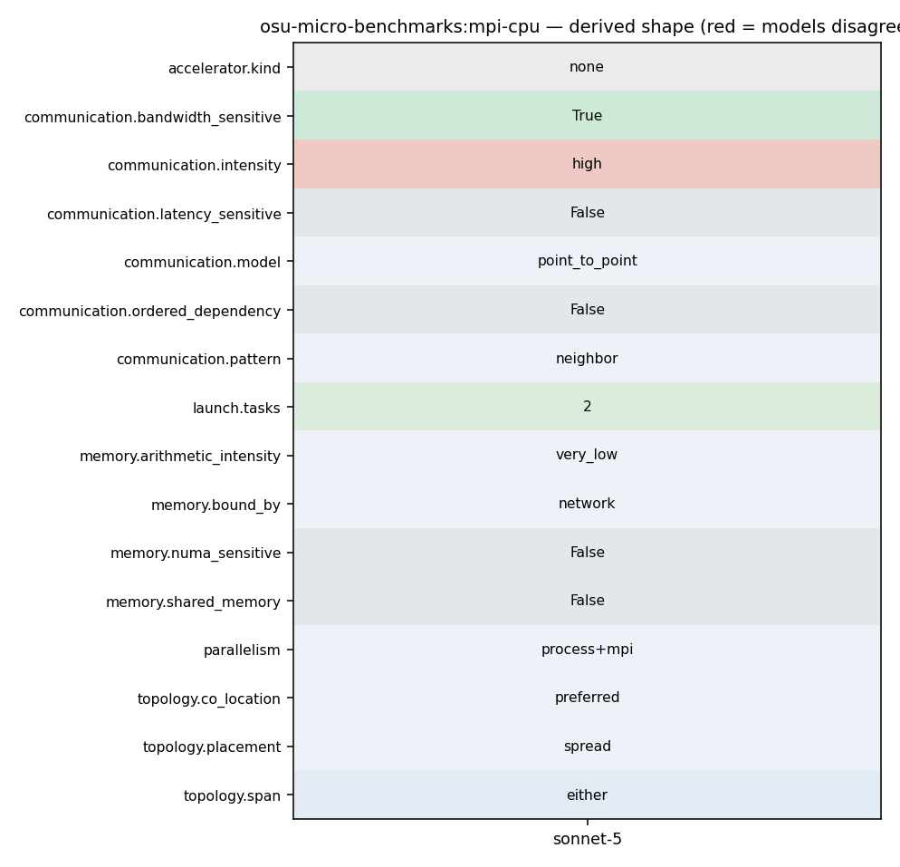

mpirun_rsh -np 2 -hostfile hostfile ./osu_bw
45 46 po_ret = process_options(argc, argv); 47 omb_populate_mpi_type_list(mpi_type_list); 48 if (PO_OKAY == po_ret && NONE != options.accel) { 49 if (init_accel()) { 50 fprintf(stderr, "Error initializing device\n"); 51 exit(EXIT_FAILURE); 52 } 53 } 54 55 window_size = options.window_size; 56 if (options.buf_num == MULTIPLE) {
155 } 156 fflush(stdout); 157 print_only_header(myid); 158 for (size = options.min_message_size; size <= options.max_message_size; 159 size *= 2) { 160 num_elements = size / mpi_type_size; 161 if (0 == num_elements) { 162 continue; 163 } 164 omb_ddt_transmit_size = 165 omb_ddt_assign(&omb_curr_datatype, mpi_type_list[mpi_type_itr], 166 num_elements) * 167 mpi_type_size; 168 num_elements = omb_ddt_get_size(num_elements); 169 if (options.buf_num == MULTIPLE) { 170 for (i = 0; i < window_size; i++) { 171 if (allocate_memory_pt2pt_size(&s_buf[i], &r_buf[i], myid, 172 size)) { 173 /* Error allocating memory */ 174 omb_mpi_finalize(omb_init_h); 175 exit(EXIT_FAILURE); 176 } 177 } 178
167 -t 4:6 // sender processes = 4 and receiver processes = 6 168 -t 2: // not defined 169 170 osu_bw - Bandwidth Test 171 * The bandwidth tests are carried out by having the sender sending out a 172 * fixed number (equal to the window size) of back-to-back messages to the 173 * receiver and then waiting for a reply from the receiver. The receiver 174 * sends the reply only after receiving all these messages. This process is 175 * repeated for several iterations and the bandwidth is calculated based on 176 * the elapsed time (from the time sender sends the first message until the
201 MPI_CHECK(MPI_Barrier(omb_comm)); 202 t_total = 0.0; 203 204 for (i = 0; i < options.iterations + options.skip; i++) { 205 if (i == options.skip) { 206 omb_papi_start(&papi_eventset); 207 } 208 if (options.validate) { 209 if (options.buf_num == MULTIPLE) { 210 for (l = 0; l < window_size; l++) { 211 set_buffer_validation( 212 s_buf[l], r_buf[l], size, options.accel, i + l, 213 omb_curr_datatype, omb_buffer_sizes); 214 } 215 } else { 216 set_buffer_validation( 217 s_buf[0], r_buf[0], size, options.accel, i, 218 omb_curr_datatype, omb_buffer_sizes); 219 } 220 MPI_CHECK(MPI_Barrier(omb_comm)); 221 } 222 if (myid == 0) { 223 for (k = 0; k <= options.warmup_validation; k++) { 224 if (i >= options.skip &&
233 } 234 #endif /* #ifdef _ENABLE_CUDA_KERNEL_ */ 235 236 for (j = 0; j < window_size; j++) { 237 if (options.buf_num == SINGLE) { 238 MPI_CHECK(MPI_Isend(s_buf[0], num_elements, 239 omb_curr_datatype, 1, 100, 240 omb_comm, request + j)); 241 } else { 242 MPI_CHECK(MPI_Isend(s_buf[j], num_elements, 243 omb_curr_datatype, 1, 100, 244 omb_comm, request + j)); 245 } 246 } 247 MPI_CHECK(MPI_Waitall(window_size, request, reqstat)); 248 249 MPI_CHECK(MPI_Recv(r_buf[0], 1, MPI_CHAR, 1, 101, 250 omb_comm, &reqstat[0])); 251 252 #ifdef _ENABLE_CUDA_KERNEL_ 253 if (options.src == 'M') {
233 } 234 #endif /* #ifdef _ENABLE_CUDA_KERNEL_ */ 235 236 for (j = 0; j < window_size; j++) { 237 if (options.buf_num == SINGLE) { 238 MPI_CHECK(MPI_Isend(s_buf[0], num_elements, 239 omb_curr_datatype, 1, 100, 240 omb_comm, request + j)); 241 } else { 242 MPI_CHECK(MPI_Isend(s_buf[j], num_elements, 243 omb_curr_datatype, 1, 100, 244 omb_comm, request + j)); 245 } 246 } 247 MPI_CHECK(MPI_Waitall(window_size, request, reqstat)); 248 249 MPI_CHECK(MPI_Recv(r_buf[0], 1, MPI_CHAR, 1, 101, 250 omb_comm, &reqstat[0])); 251 252 #ifdef _ENABLE_CUDA_KERNEL_ 253 if (options.src == 'M') { 254 touch_managed_src_window(r_buf, size, window_size, 255 SUB); 256 }
113 break; 114 } 115 116 if (numprocs != 2) { 117 if (myid == 0) { 118 fprintf(stderr, "This test requires exactly two processes\n"); 119 } 120 121 omb_mpi_finalize(omb_init_h); 122 exit(EXIT_FAILURE); 123 } 124 125 #ifdef _ENABLE_CUDA_KERNEL_ 126 if (options.src == 'M' || options.dst == 'M') {
181 set_buffer_pt2pt(r_buf[i], myid, options.accel, 'b', size); 182 } 183 } else { 184 set_buffer_pt2pt(s_buf[0], myid, options.accel, 'a', size); 185 set_buffer_pt2pt(r_buf[0], myid, options.accel, 'b', size); 186 } 187 188 if (size > LARGE_MESSAGE_SIZE) { 189 options.iterations = options.iterations_large;
233 } 234 #endif /* #ifdef _ENABLE_CUDA_KERNEL_ */ 235 236 for (j = 0; j < window_size; j++) { 237 if (options.buf_num == SINGLE) { 238 MPI_CHECK(MPI_Isend(s_buf[0], num_elements, 239 omb_curr_datatype, 1, 100, 240 omb_comm, request + j)); 241 } else { 242 MPI_CHECK(MPI_Isend(s_buf[j], num_elements, 243 omb_curr_datatype, 1, 100, 244 omb_comm, request + j)); 245 } 246 } 247 MPI_CHECK(MPI_Waitall(window_size, request, reqstat)); 248 249 MPI_CHECK(MPI_Recv(r_buf[0], 1, MPI_CHAR, 1, 101, 250 omb_comm, &reqstat[0]));
70 if (MPI_COMM_NULL == omb_comm) { 71 OMB_ERROR_EXIT("Cant create communicator"); 72 } 73 MPI_CHECK(MPI_Comm_rank(omb_comm, &myid)); 74 MPI_CHECK(MPI_Comm_size(omb_comm, &numprocs)); 75 76 omb_graph_options_init(&omb_graph_options); 77 if (0 == myid) {
113 break; 114 } 115 116 if (numprocs != 2) { 117 if (myid == 0) { 118 fprintf(stderr, "This test requires exactly two processes\n"); 119 } 120 121 omb_mpi_finalize(omb_init_h); 122 exit(EXIT_FAILURE); 123 } 124 125 #ifdef _ENABLE_CUDA_KERNEL_ 126 if (options.src == 'M' || options.dst == 'M') {
1043 In this run, the latency test allocates buffers at both rank 0 and rank 1 on 1044 the GPU devices. 1045 1046 - mpirun_rsh -np 2 -hostfile hostfile MV2_USE_CUDA=1 osu_bw D H 1047 - mpirun_rsh -np 2 -hostfile hostfile MV2_USE_ROCM=1 osu_bw D H 1048 1049 In this run, the bandwidth test allocates buffers at rank 0 on the GPU device 1050 and buffers at rank 1 on the host. 1051 1052 Setting GPU affinity 1053 --------------------
113 break; 114 } 115 116 if (numprocs != 2) { 117 if (myid == 0) { 118 fprintf(stderr, "This test requires exactly two processes\n"); 119 } 120 121 omb_mpi_finalize(omb_init_h); 122 exit(EXIT_FAILURE); 123 } 124 125 #ifdef _ENABLE_CUDA_KERNEL_ 126 if (options.src == 'M' || options.dst == 'M') {
1043 In this run, the latency test allocates buffers at both rank 0 and rank 1 on 1044 the GPU devices. 1045 1046 - mpirun_rsh -np 2 -hostfile hostfile MV2_USE_CUDA=1 osu_bw D H 1047 - mpirun_rsh -np 2 -hostfile hostfile MV2_USE_ROCM=1 osu_bw D H 1048 1049 In this run, the bandwidth test allocates buffers at rank 0 on the GPU device 1050 and buffers at rank 1 on the host. 1051 1052 Setting GPU affinity 1053 --------------------
113 break; 114 } 115 116 if (numprocs != 2) { 117 if (myid == 0) { 118 fprintf(stderr, "This test requires exactly two processes\n"); 119 } 120 121 omb_mpi_finalize(omb_init_h); 122 exit(EXIT_FAILURE); 123 } 124 125 #ifdef _ENABLE_CUDA_KERNEL_ 126 if (options.src == 'M' || options.dst == 'M') {